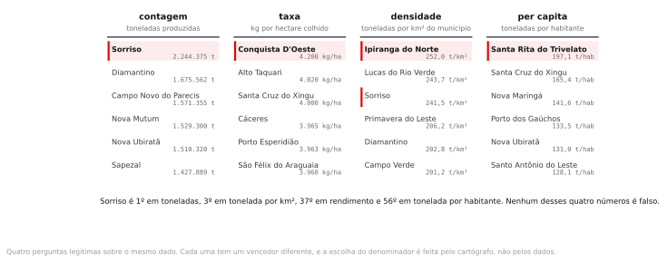

Preparação e dados
A leitura era o capítulo do How to Lie with Maps sobre mapas de dados. Guarde uma ideia de lá para esta aula: a maior parte dos mapas enganosos não nasce de má-fé, nasce de configurações padrão aceitas sem exame.
Crie InfoGeo/tema04_tematico com dados_brutos, dados_tratados e uma pasta nova, estilos, onde você vai gravar os arquivos .qml.
python3 dados/baixar_dados_reais.py --semana 4- municipios_mt_soja_2023.gpkg 141 municípios de Mato Grosso, polígono, EPSG:4674. Malha municipal oficial do IBGE de 2022 com área plantada, área colhida, produção, rendimento da PAM 2023 e população do Censo 2022 já unidos por CD_MUN.oficial
- sidra_pam_soja_2023.csv Produção Agrícola Municipal 2023, soja em grão, 141 municípios de MT. CSV UTF-8, separador vírgula. Chave: cd_mun.oficial
- sidra_pop_censo2022.csv População residente do Censo 2022 por município de MT, tabela 4709 do SIDRA. CSV UTF-8.oficial
- _recalcula_oficial.py Script que refaz as quatro classificações com o mesmo algoritmo do QGIS, inclusive o
pretty()que o método do desvio padrão aplica, e grava_classes.csv,_conferencia.csve_numeros_oficiais.json. - LEIA-ME.txt Dicionário dos campos, as quebras e contagens das quatro classificações e a lista de números que o roteiro reproduz.
CD_MUN. A população é a do Censo 2022, tabela 4709. Os arquivos _treino das versões anteriores do roteiro continuam na pasta e não são usados por nenhum passo; o LEIA-ME diz quais são. Todos os valores citados nesta página saem do _recalcula_oficial.py, que você pode rodar para conferir.Duas assessorias de imprensa recebem o mesmo arquivo de produção agrícola. Uma publica um mapa em que quase o estado inteiro é soja. A outra publica um mapa em que só dois municípios aparecem. Nenhuma das duas alterou um único número. Qual das duas mentiu?
Cartografia temática e semiologia gráfica
Até aqui você produziu números. A partir de hoje você produz imagens, e imagem convence antes de o leitor conferir. Esta aula é sobre as decisões que o software toma por você quando você aperta Classify, e sobre como escolher cada uma delas de propósito.
As variáveis visuais de Bertin
Em 1967, o cartógrafo francês Jacques Bertin publicou Sémiologie graphique e fez algo que ninguém tinha feito: catalogar exaustivamente as maneiras pelas quais uma marca no papel pode variar. São sete, e cada uma comunica um tipo diferente de informação.

Variável visual ordenada e variável visual seletiva
Uma variável é ordenada quando o leitor percebe uma sequência sem instrução: escuro é mais que claro, grande é mais que pequeno. É seletiva quando permite isolar um grupo de imediato: todos os pontos vermelhos saltam do fundo. Matiz é fortemente seletiva e não é ordenada, e é por isso que serve para categoria e não para grandeza.
Por que o mapa de calor em arco-íris, do azul ao vermelho, é tão popular se matiz não ordena?
Porque parece bonito, porque muitos softwares oferecem como padrão e porque há uma convenção aprendida, do azul-frio ao vermelho-quente, que funciona para temperatura e não para mais nada. Fora desse domínio, o leitor precisa da legenda a cada símbolo, e o meio do arco-íris cria fronteiras visuais em lugares onde o dado não tem fronteira nenhuma.
O pressuposto oculto do mapa coroplético
Coroplético é o mapa em que cada unidade territorial recebe uma cor conforme o valor de um atributo. É o mapa mais comum do mundo e o que mais engana, por um motivo estrutural: ele pinta a unidade inteira de uma cor só.
O pressuposto de homogeneidade interna
Ao preencher um polígono com uma cor única, o mapa afirma que o fenômeno se distribui de maneira uniforme dentro dele. Quase nunca é o caso. Aripuanã tem 24.678 km² e 10.731 hectares colhidos de soja, quatro décimos de um por cento do seu território, e o mapa pinta o território inteiro. O leitor atribui importância proporcional à área pintada, e a área do polígono não guarda relação com o valor mapeado.
Some a isso a distorção de tamanho. Os dez municípios mais extensos ocupam 25,2% do território de Mato Grosso e respondem por 7,9% da produção de soja. Os trinta menores ocupam 3,5% do território, produzem 2,0% e abrigam 13,5% da população. Colniza, o maior município do estado com 27.960 km², não colheu um hectare de soja em 2023 e ocupa 3% da tela. Em um coroplético, os grandes dominam a retina e os pequenos praticamente somem.
Esse é o caso brasileiro em forma extrema. Em qualquer mapa temático nacional, a Amazônia ocupa quase metade da tela com municípios do tamanho de Portugal, e o Sudeste, onde vivem 42% dos brasileiros, cabe em um canto. Em um coroplético de qualquer variável social brasileira, o que mais salta aos olhos costuma ser o desenho da malha municipal, não a variável.
Concluir "o problema está concentrado no Norte" a partir de um coroplético nacional. O que está concentrado no Norte é a área dos polígonos. Antes de afirmar concentração, refaça o mapa com símbolo proporcional ou com cartograma e veja se a conclusão sobrevive.
Contagem, taxa e densidade: o mesmo dado, quatro rankings
Uma contagem é um número absoluto: toneladas produzidas. Uma taxa divide por algo que mede esforço ou exposição: quilos por hectare colhido. Uma densidade divide por área: toneladas por quilômetro quadrado de município. Cada uma responde a uma pergunta legítima e diferente.

| Forma | Responde | Quando engana |
|---|---|---|
Contagemquantidade_t | Onde está o volume, onde vai o caminhão, onde entra o imposto | Municípios grandes ganham por serem grandes. Vira um mapa da malha. |
Taxarendimento_kg_ha | Quão eficiente é a lavoura naquele lugar | Conquista D'Oeste lidera o rendimento com 4.200 kg/ha e 10.636 hectares colhidos, 0,09% da área colhida do estado. Sempre filtre por um mínimo de exposição. |
Densidadequantidade_t / AREA_KM2 | Quão intensamente o território está sendo usado | Depende inteiramente do recorte territorial, que é arbitrário. É o MAUP entrando pela porta dos fundos. |
Per capitaquantidade_t / pop_residente | Quanto da atividade existe por pessoa | Denominadores pequenos explodem a razão. Santa Rita do Trivelato lidera com 197,1 toneladas por habitante porque tem 3.276 habitantes. |
Qual denominador você usaria para um mapa que vai embasar a decisão sobre onde construir um armazém de grãos?
Contagem, e sem coroplético. O armazém precisa de volume físico chegando, não de eficiência por hectare. Mas volume é uma grandeza absoluta e coroplético é ruim para grandeza absoluta, então o instrumento correto é símbolo proporcional sobre a sede, com a área do círculo proporcional às toneladas.
Quatro métodos de classificação
Para transformar 141 números contínuos em cinco cores, é preciso decidir onde cortar. O QGIS oferece essa decisão em um menu suspenso, sem nenhuma explicação, e com um item já pré-selecionado.

| Método | Como corta | O que o mapa passa a dizer |
|---|---|---|
| Intervalos iguais | Divide a amplitude em faixas de mesma largura | Com dado assimétrico, quase tudo cai na primeira classe. O mapa vira "só dois lugares importam". |
| Quantis | Mesmo número de unidades em cada classe | O mapa fica visualmente equilibrado e some com a assimetria. Vira "está em toda parte". |
| Quebras naturais (Jenks) | Minimiza a variância dentro das classes | Respeita agrupamentos que existem no dado. É o padrão razoável, e é instável: muda quando você acrescenta uma feição. |
| Desvio padrão | Faixas medidas em desvios em torno da média | Só faz sentido com distribuição aproximadamente simétrica. Com dado assimétrico, esvazia classes e nem respeita o número que você pediu. |
Peça cinco classes pelo método do desvio padrão e você recebe seis. O QGIS aplica o algoritmo pretty() do R sobre o escore padronizado, e o número de intervalos redondos que cabem no intervalo dos dados nem sempre é o que você pediu. Neste arquivo, a primeira quebra cai exatamente sobre a média, em 315.076 toneladas, e as seguintes ficam a um desvio padrão de distância uma da outra.
Se os quatro métodos são legítimos e produzem mapas incompatíveis, existe um mapa certo?
Não, e a exigência recai sobre a declaração: o método e o número de classes precisam aparecer na legenda, a distribuição precisa estar disponível e a escolha precisa responder à pergunta em questão. Sem essa informação, o leitor não tem como avaliar o que o mapa afirma, do mesmo jeito que não avaliaria uma citação sem fonte.
Quantas classes
O olho humano distingue com segurança de cinco a sete níveis de intensidade em uma sequência de cores impressa. Menos que quatro joga fora informação; mais que sete produz uma legenda que ninguém consulta e classes que ninguém separa.
A escolha do número interage com o método. Com quantis e três classes, um terço do estado fica na classe alta. Com quantis e nove classes, a mesma área se fragmenta e a mensagem de "está em toda parte" enfraquece. Você vai medir isso no passo 6.
Cinco classes, método declarado na legenda, e a distribuição do dado disponível para quem quiser conferir. Se você precisa de mais de sete classes para a mensagem funcionar, o problema provavelmente não é o número de classes: é o coroplético.
Paleta e acessibilidade
Existem três famílias de paleta, e usar a errada quebra o mapa antes de qualquer discussão sobre classificação.

| Família | Use quando | Exemplo no ColorBrewer |
|---|---|---|
| Sequencial | A variável só cresce: produção, densidade, percentual | YlOrBr, Blues, Greens |
| Divergente | Existe um ponto de referência com significado: a média, o zero, a meta | RdYlBu, BrBG, PiYG |
| Qualitativa | As categorias não têm ordem: tipo de cultura, classe de uso | Set2, Dark2, Paired |
Usar paleta divergente para uma variável que só cresce. O leitor procura o ponto de virada, encontra o meio da escala e conclui que ali existe uma fronteira qualitativa. Não existe: é o meio numérico do intervalo, escolhido por você.
Símbolo proporcional e cartograma
Quando a variável é uma contagem, o coroplético é o instrumento errado, e há duas alternativas.
O símbolo proporcional põe um círculo sobre cada unidade, com área proporcional ao valor. Resolve o problema do tamanho do polígono e cria outro: círculos grandes cobrem os vizinhos, e o olho estima área de círculo com viés sistemático para menos. No QGIS, use Size assistant com Scale method: Surface, que dimensiona por área e não por raio.
O cartograma deforma os polígonos até que a área de cada um fique proporcional ao valor. Resolve por completo o problema do tamanho e destrói o reconhecimento geográfico: fica bom para uma audiência que conhece o território de cor, e ruim para todas as outras. Não vem no QGIS de fábrica; depende de plugin.
| Instrumento | Bom para | Preço |
|---|---|---|
| Coroplético | Taxa, densidade, percentual | Pinta a unidade inteira e favorece o polígono grande |
| Símbolo proporcional | Contagem absoluta | Sobreposição em áreas densas e subestimação da área do círculo |
| Cartograma | Mostrar que a área engana | O leitor perde a referência do mapa |
| Ponto de contagem | Sugerir distribuição interna | Os pontos são sorteados dentro do polígono e podem ser lidos como localização real |
MAUP, agora com os dois efeitos separados
Na aula 3 o problema apareceu como observação: o percentual de domicílios sem esgoto ia de 0% a 100% por setor de São Paulo e virava um número só, 4,56%, por município. Agora ele ganha nome, mecanismo e duas partes.
Efeito de escala e efeito de zoneamento
O efeito de escala é a mudança do resultado quando as unidades ficam maiores ou menores, mantido o critério de agregação. O efeito de zoneamento é a mudança do resultado quando o número de unidades é o mesmo e apenas o traçado das fronteiras muda. Os dois são consequência de as unidades territoriais serem convenções administrativas, e não recortes do fenômeno.

Uma consultoria apresenta uma correlação de 0,45 entre produção agrícola e população em Mato Grosso. O que você pergunta antes de qualquer outra coisa?
Em que unidade territorial a correlação foi calculada. Com os 141 municípios, a mesma conta devolve −0,06. Agregar unidades tende a aumentar a correlação, porque a agregação suaviza a variância interna, mas não é uma escada: com 24 unidades a correlação cai para −0,09 antes de subir. Uma correlação sem a unidade declarada é um número sem denominador.
Diante de um mapa temático, a prova pode pedir a identificação da variável visual usada e o julgamento sobre se ela é adequada ao dado; a crítica da escolha de denominador; o diagnóstico do método de classificação a partir da legenda e da distribuição; e a separação, em uma conclusão dada, do que é fenômeno e do que é efeito de escala ou de zoneamento.
Quatro mapas honestos do mesmo dado
Todos os valores abaixo saem do arquivo que você baixou. Se o seu QGIS mostrar outra coisa, confira antes de tudo se você pediu cinco classes e se o campo é o certo.
Carregar e conferir os totais
- Projeto novo, salvo como
InfoGeo/tema04_tematico/projeto.qgz. - Arraste
municipios_mt_soja_2023.gpkg. - Em Project ▸ Properties ▸ General, defina o elipsoide como GRS 1980 e a unidade de área como Quilômetros quadrados.
- Abra o painel de estatísticas em View ▸ Panels ▸ Statistics e passe pelos campos.
141 feições. AREA_KM2 soma 903.208, pop_residente soma 3.658.649, area_colhida_ha soma 11.981.285 e quantidade_t soma 44.425.783. O máximo de quantidade_t é 2.244.375, em Sorriso, e a média é 315.076. Treze municípios têm quantidade_t igual a zero, entre eles Colniza, o maior do estado em área.
No painel de estatísticas, compare a média de 315.076 com a mediana de 151.200. A média é mais que o dobro da mediana, e isso é a assinatura de uma distribuição com cauda longa à direita: poucos municípios muito acima, muitos amontoados perto do zero. Os dez maiores produtores respondem por 33,5% da safra estadual. É exatamente o caso em que a escolha do método de classificação decide o mapa. Faça essa comparação sempre, antes de abrir a aba de simbologia.
O primeiro coroplético, em intervalos iguais
- Botão direito na camada de municípios, Properties, aba Symbology.
- No seletor do topo, troque Single Symbol por Graduated.
- Preencha conforme abaixo e clique Classify, depois Apply.
- Value
- quantidade_t
- Symbol
- preenchimento simples, contorno branco 0,15 mm
- Color ramp
- YlOrBr (ColorBrewer)
- Mode
- Equal Interval
- Classes
- 5
- Precision
- 0
A legenda mostra as quebras em 448.875 · 897.750 · 1.346.625 · 1.795.500 · 2.244.375. Na coluna de contagem, ative Count features pelo menu de contexto da legenda: os cinco valores são 109 · 19 · 6 · 6 · 1. O mapa está quase todo na cor mais clara, e a classe mais escura tem um município só.
Quatro classificações, e um arquivo de estilo para cada
Agora você vai fabricar as quatro versões do mesmo mapa sem tocar em um único número.
- Com o estilo de intervalos iguais aplicado, vá em Properties, aba Symbology, botão Style no rodapé da janela, Save Style, e grave
estilos/mt_soja_intervalos_iguais.qml. - Duplique a camada três vezes: botão direito, Duplicate Layer. Renomeie as cópias para quantis, jenks e desvio.
- Em cada cópia, mude apenas o campo Mode na aba Symbology, clique Classify e depois Apply. Salve o
.qmlcorrespondente emestilos/.
| Mode no QGIS | Quebras superiores | Contagem por classe |
|---|---|---|
| Equal Interval | 448.875 · 897.750 · 1.346.625 · 1.795.500 · 2.244.375 | 109 · 19 · 6 · 6 · 1 |
| Quantile (Equal Count) | 10.585 · 96.259 · 210.000 · 525.000 · 2.244.375 | 29 · 28 · 28 · 28 · 28 |
| Natural Breaks (Jenks) | 200.912 · 528.477 · 960.000 · 1.675.562 · 2.244.375 | 83 · 31 · 15 · 11 · 1 |
| Standard Deviation | 315.076 · 735.509 · 1.155.942 · 1.576.375 · 1.996.807 · 2.244.375 | 99 · 20 · 13 · 7 · 1 · 1 |
Ative Count features em cada camada e compare com a coluna da direita. Se a sua contagem de Jenks vier diferente, confirme que Classes está em 5 e que nenhuma feição foi filtrada. A classe mais alta reúne 5,1% da produção estadual pelos intervalos iguais, 65,2% pelos quantis e outra vez 5,1% por Jenks. Repare no que está por trás desses 5,1%: em três dos quatro métodos a classe mais escura contém um único município, Sorriso, e é dele que vem toda a tinta.
O .qml guarda a simbologia completa em XML, separada dos dados: campo, método, quebras, cores, contornos e rótulos. Ele é o que torna um mapa reprodutível por outra pessoa e é o único jeito de auditar depois qual método você usou. Guarde o .qml junto com o resultado, sempre. Isso volta na aula 10, quando a reprodutibilidade vira critério de nota.
Os quatro lado a lado, no primeiro layout do curso
Colocar as quatro versões no mesmo layout é o jeito mais rápido de mostrar quanto da mensagem vem do método, porque o leitor compara sem depender da memória.
- Vá em Project ▸ New Print Layout e chame de quatro classificacoes.
- Antes de inserir os mapas, crie quatro temas. No painel de camadas, deixe visível só a camada de intervalos iguais e use o botão de temas, Add Theme, com o nome t_iguais. Repita para os outros três.
- No layout, use Add Item ▸ Add Map e desenhe o primeiro retângulo no quadrante superior esquerdo.
- Com o mapa selecionado, no painel Item Properties, marque Follow map theme e escolha t_iguais. Trave a escala em Lock layers.
- Repita para os outros três quadrantes, cada um com o seu tema.
- Insira quatro rótulos com Add Item ▸ Add Label, um por mapa, com o nome do método e a contagem por classe.
- Acrescente uma barra de escala e uma seta de norte, que valem para os quatro, e um rótulo de fonte no rodapé.
- Exporte com Layout ▸ Export as Image, em 300 dpi.
Se os quatro mapas não estiverem na mesma escala e no mesmo enquadramento, a comparação perde valor. Defina a escala numericamente em Item Properties, com o mesmo valor nos quatro, e o mesmo centro. Comparação lado a lado com escalas diferentes é outro jeito clássico de enganar.
Este é o primeiro layout do curso, e o roteiro trata dele no mínimo necessário para a comparação. O módulo Preparar o mapa para entrega cobre o layout de impressão por inteiro, incluindo legenda filtrada, barra de escala, mapa de detalhe, atlas e template. A APS 1 é a primeira entrega cobrada contra o padrão de entrega que está no fim daquele módulo.
A mesma variável em contagem e em rendimento
- Duplique de novo a camada e chame de rendimento.
- Em Symbology, troque o campo Value de
quantidade_tpararendimento_kg_ha, com Mode em Quantile e 5 classes. - Coloque as duas camadas lado a lado no layout e compare o norte do estado.
No mapa de contagem, o topo é Sorriso, com 2.244.375 toneladas. No de rendimento, entre os 108 municípios com mais de 5.000 hectares colhidos, o topo é Conquista D'Oeste, com 4.200 kg/ha, e Sorriso cai para o 37º lugar. Trocar o denominador reordenou o estado.
- Crie um terceiro campo, no Field Calculator, com nome
T_POR_KM2, decimal com precisão 2:
"quantidade_t" / "AREA_KM2"
O máximo de T_POR_KM2 é 252,05, em Ipiranga do Norte, que é o 15º em toneladas e tem 3.422 km². Sorriso, o campeão em volume, fica em terceiro nesta lista, com 241,50. Crie ainda T_POR_HAB, com "quantidade_t" / "pop_residente": o topo é Santa Rita do Trivelato, com 197,12 toneladas por habitante e 3.276 moradores. Você tem agora quatro mapas com quatro vencedores diferentes, todos calculados corretamente a partir do mesmo arquivo.
Mapear rendimento sem filtrar por área colhida mínima. Sem filtro, o topo de rendimento_kg_ha continua sendo Conquista D'Oeste, mas atrás dela aparecem municípios com poucos milhares de hectares que representam frações de um por cento da safra. No filtro da camada, em Properties ▸ Source ▸ Query Builder, use "area_colhida_ha" > 5000, o que deixa 108 dos 141, e diga isso na legenda.
Mexer só no número de classes
- Volte à camada de quantis sobre
quantidade_t. - Troque Classes para 3, clique Classify, Apply, e olhe o mapa.
- Troque para 9, Classify, Apply, e olhe de novo.
- Volte para 5.
Com quantis e 3 classes, 47 municípios ficam na faixa mais alta, um terço do estado. Com 9 classes, a faixa mais alta cai para 16. O dado não mudou; a fração do estado que a legenda chama de "alta produção" foi de 33,3% para 11,3% porque você mexeu em um número inteiro numa caixa.
Paleta, e o teste de daltonismo
- Na camada de Jenks, abra o seletor Color ramp e escolha Create New Color Ramp ▸ Catalog: ColorBrewer.
- Selecione
YlOrBrcom 5 classes. Aplique. - Troque para a divergente
RdYlBue olhe o resultado. A variável só cresce e não tem ponto de referência, então a paleta cria uma fronteira falsa no meio do intervalo. - Volte para
YlOrBr. - Teste a acessibilidade em View ▸ Preview Mode ▸ Simulate color blindness (Deuteranopia).
- Compare o mapa com
YlOrBre com uma paleta arco-íris qualquer sob o modo de simulação. Depois volte para Normal.
Sob a simulação, YlOrBr continua legível: as cinco classes permanecem ordenadas do claro ao escuro, porque a paleta varia luminosidade e não só matiz. Com arco-íris, as classes do meio e do topo se aproximam e a ordem se perde.
Símbolo proporcional, para a contagem
- Gere os pontos das sedes a partir da própria malha: na caixa de ferramentas, rode
Centroids, de identificadornative:centroids, sobre a camada de municípios, com Create centroid for each part desmarcado, gravando emdados_tratados/sedes_mt.gpkg. Coloque no topo da pilha. - Em Symbology, escolha Single Symbol, marcador simples, círculo, preenchimento com 60% de opacidade e contorno escuro fino.
- Clique no botão de dado definido ao lado de Size e escolha Assistant.
- Preencha conforme abaixo.
- Source
- quantidade_t
- Values from
- 0 a 2244375 (botão Fetch value range)
- Size from
- 0,4 mm a 12 mm
- Scale method
- Surface
- Deixe a camada de municípios abaixo, em cinza claro, servindo apenas de referência geográfica.
- No layout, monte a comparação final: o coroplético de contagem de um lado, o símbolo proporcional do outro.
Se o QGIS dimensionar o raio pelo valor, um município com o dobro da produção ganha um círculo com quatro vezes a área. Scale method: Surface dimensiona a área, que é o que o olho lê. Ainda assim, o leitor subestima diferenças de área de círculo; considere rotular os cinco maiores.
Nenhum dos mapas mentiu, e eles não podem ser todos publicados
Você produziu, a partir de um único arquivo, um mapa em que 109 municípios estão na classe mais baixa e outro em que 29 estão. Um em que Sorriso lidera, outro em que Conquista D'Oeste lidera, um terceiro em que Ipiranga do Norte lidera e um quarto em que quem lidera é Santa Rita do Trivelato, com 3.276 habitantes. Cada um é reproduzível e defensável diante da pergunta certa, e cada um sustenta uma manchete que os outros três desmentem. Escolher qual publicar é uma decisão editorial, e ela precisa ser assumida como tal na legenda.
Exercício
Você é o editor de dados de um jornal e recebeu os quatro mapas que acabou de produzir.
- Escolha duas das quatro classificações.
- Para cada uma, escreva a manchete de até doze palavras que aquele mapa sustentaria. A manchete precisa ser verdadeira em relação ao mapa, não em relação à sua opinião.
- Diga qual das duas você defenderia publicamente, e por quê.
- Escreva a crítica que um jornalista competente do jornal concorrente faria à sua escolha, em uma frase, citando um número.
Exemplo do formato, com um par que você não pode usar de novo: um mapa de intervalos iguais sustenta "Soja de Mato Grosso se concentra em um município só", porque 109 dos 141 caem na classe mais baixa e a mais alta tem apenas Sorriso. A crítica é que a classe mais baixa vai de zero a 448.875 toneladas e mistura Colniza, que não colheu um hectare, com Alto Taquari, que produziu 253.260 toneladas.
Fechamento
Nenhuma das duas mentiu. Uma usou quantis e a outra usou intervalos iguais, e as duas omitiram esse detalhe da legenda.
Com quantis, 28 dos 141 municípios caem na classe mais alta e ela reúne 65,2% da produção do estado. Com intervalos iguais, a classe mais alta tem um município, Sorriso, e 5,1% da produção. Os dois mapas saem do mesmo arquivo, em dois cliques no mesmo menu, e o leitor não tem como distinguir sem a legenda completa.
Mentira em cartografia raramente é dado falso. É escolha não declarada. A partir de hoje, todo mapa seu carrega na legenda o campo, o método, o número de classes e o denominador, do mesmo jeito que carrega o CRS desde a tema 2.
O que discutir com a turma
Se toda escolha de classificação é retórica, qualquer mapa vale o mesmo?
Não. Há escolhas piores que outras diante de uma pergunta específica: paleta divergente para variável que só cresce é pior, coroplético de contagem é pior, nove classes em mapa de imprensa é pior. O que não existe é uma escolha neutra, e chamar o padrão do software de neutro é a forma mais comum de não escolher.
O QGIS deveria mostrar o histograma da variável antes de deixar você classificar?
Ele mostra, na aba Histogram da mesma janela, e quase ninguém abre. Vale discutir se o problema é de interface ou de formação: a ferramenta oferece a informação sem torná-la parte do fluxo, e o padrão vem pré-selecionado e pronto para aplicar.
Um órgão público que divulga mapa temático deveria ser obrigado a publicar a tabela por trás dele?
APS 1 · o mapa que você assina
A primeira atividade prática supervisionada é lançada hoje e vale um terço dos 30% das APS. Você vai escolher uma base pública brasileira, formular uma pergunta no formato das dez do semestre, produzir um mapa temático que a responda e escrever uma nota curta defendendo cada decisão: denominador, método de classificação, número de classes, paleta e recorte territorial. A nota também precisa dizer qual conclusão o seu mapa não autoriza. O enunciado completo, os critérios de correção e o prazo estão no Blackboard.
- Você comparou métodos de classificação sem nenhum critério objetivo para escolher entre eles. Existem medidas de qualidade de classificação, como a razão de ajuste de variância, e nenhuma resolve a questão, porque a pergunta é retórica antes de ser estatística.
- O cartograma foi discutido e não foi produzido. Depende de plugin e de tempo que esta aula não tem.
- Nada aqui trata de rotulagem, hierarquia tipográfica ou composição da página. Os elementos de layout apareceram pela primeira vez no passo 4 e voltam com rigor na aula 10.
- A PAM é uma estimativa municipal, produzida por levantamento junto a informantes locais, e não uma medição de lavoura. Rendimentos redondos como 3.600 e 3.900 kg/ha aparecem em dezenas de municípios porque o informante arredonda. Isso não invalida o mapa, mas recomenda desconfiar das casas decimais do rendimento.
- O MAUP foi demonstrado e não foi corrigido, porque não há correção conhecida. O que se pode fazer é declarar a unidade e, quando possível, mostrar o resultado em mais de uma escala. A aula 6 volta ao assunto com a matriz de vizinhança.